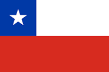
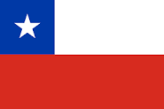

Los jugadores por los cuales esta complementado el equipo actual de 9z son:
-
 Franco Garcia. Alias: DGT. Nacionalidad: Uruguayo
Franco Garcia. Alias: DGT. Nacionalidad: Uruguayo .png)
-
 Maximiliano Gonzalez. Alias: max. Nacionalidad: Uruguayo
Maximiliano Gonzalez. Alias: max. Nacionalidad: Uruguayo
-
 David Tapia Maldonado Alias: dav1deuS. Nacionalidad: Chileno 
David Tapia Maldonado Alias: dav1deuS. Nacionalidad: Chileno 
-
:quality(85)//cloudfront-us-east-1.images.arcpublishing.com/infobae/D4JJRU7EE5EOZJFUOITHL44AJQ.jpg) Nicolás Kramer Alias: buda. Nacionalidad: Argentino
Nicolás Kramer Alias: buda. Nacionalidad: Argentino 
-
 Santino Rigal Alias: try. Nacionalidad: Argentino
Santino Rigal Alias: try. Nacionalidad: Argentino